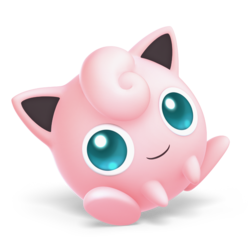

Super Smash Bros Ultimate (Switch) Review!
For those who are unaware, Super Smash Bros Ultimate is the latest entry into the Smash Bros series. With 75 characters to choose from with the DLC included, it seems that this really is the “ultimate” version of Smash Bros when it comes to character selection. The question is: how is the gameplay? Is it any good?
My first entry into the Smash Bros series was Super Smash Bros for the Wii U, otherwise known to the community as Smash4. I thought it was a great game! There really aren’t many games like Smash Bros so that makes the game series fairly unique. Super Smash Bros on the Wii U has slowed down gameplay compared to Super Smash Bros Ultimate; Super Smash bros Ultimate has mechanics where your shield doesn’t last as long compared to its predecessor, the attacks are sped up, and every time you roll in game, it becomes slower. All these mechanics really put on the pressure when battling against others.
/cdn.vox-cdn.com/uploads/chorus_image/image/64818643/ss_6.0.jpg)
Now, lets talk about the online modes in Super Smash Bros Ultimate, which is arguably why everyone plays smash. There are battle rooms, tourneys, and regular battles against others. In addition to those modes, you can spectate battles and bet coins on who will win. In the battle room option, you can connect with others who are friends on your switch through a password and ID system. Personally, I use this quite a bit when playing against streamers on Twitch.tv. As for tourneys, that is a mode that sounds exactly like it is. It’s pretty much a bracket styled tournament where you battle against others to become the number one player. I use this mode sometimes, but I often lose to others who have a really bad internet connection (lag). Lastly, the one on one battles in Smash Bros Ultimate are awesome! It’s not as good as the predecessor’s mode (For Glory), but I still find it enjoyable. For Glory was a mode where only omega stages were used, and you only had two stocks. This current version of smash bros doesn’t have that. You have to manually set the rules you want and hope that you get matched up with someone who has close to the same rules as you. Luckily enough, most people who are online have the same rules as For Glory, but sometimes I do run into that person who has items activated.
Lastly, I would like to talk about the character I use the most, Jigglypuff. She recently got buffed in the last update (6.0) making her somewhat of a threat online. I can almost always land the drill-rest combo. For those who are unaware, rest is a signature move on Jigglypuff; your opponent does have to get fairly close to you in order for rest to work. Rest kills on different percentages based on the opponent’s weight, so you do have to check the patch/datamined notes to see where others can die at. If you can land rest on others 90% of the time, you will be a pro at Jigglypuff. “Sing” (another Jigglypuff move) can also help landing rest since it makes them fall asleep.
Overall, Super Smash Bros Ultimate is a fantastic game! Recently, it has been announced that there will be another DLC fighters pack which will include an additional six characters. With those six added, we will have over 80 characters, which is nuts for a fighting game!
That’s going to wrap it up for this review. Thanks for reading, folks!